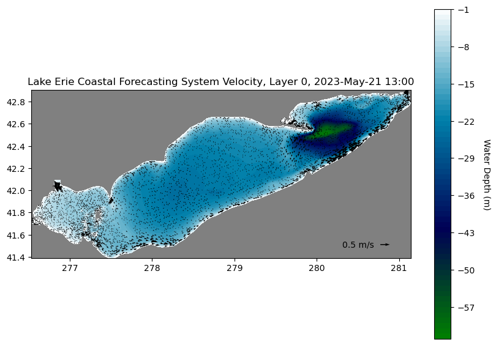
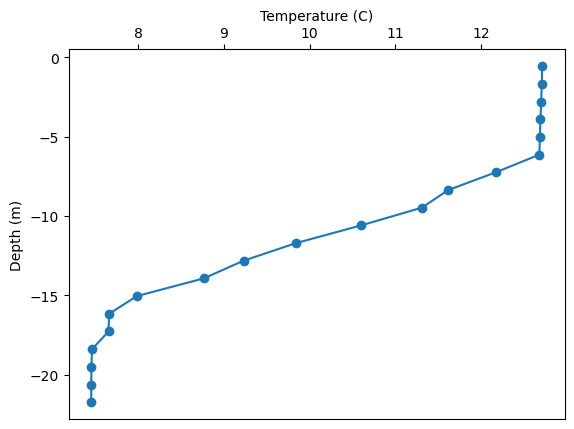

Access GLCFS model output from THREDDS Server with Python#
This notebook is help users get started using FVCOM output from the GLERL THREDDS Server. This example includes data from the Great Lakes Coastal Forecasting System (GLCFS). Learn more about GLCFS here and how to access both experimental and operational data on the Data Access page here.
The Python modules used in this example are fairly common. Advanced users may be interested in using the module PyFVCOM. More examples of PyFVCOM can be found here.
Thank you those whose code we based this notebook from including Rich Signell USGS avavilable here and Tristan Salles available here.
import time
%matplotlib inline
# from pylab import *
import numpy as np
import matplotlib.tri as Tri
import matplotlib.pyplot as plt
import netCDF4
import datetime as dt
import pandas as pd
from io import StringIO
import pyproj
%config InlineBackend.figure_format = 'png'
plt.rcParams['mathtext.fontset'] = 'cm'
import warnings
warnings.filterwarnings('ignore')
# Time to sleep in seconds before each opendap call to give server time to respond
opendap_pause = 1
Loading the FVCOM file#
# Set the URL
url = 'https://www.glerl.noaa.gov/thredds/dodsC/glcfs/erie/nowcast/052200_0001.nc'
# Load it via OPeNDAP
nc = netCDF4.Dataset(url)
# Query the variables
time.sleep(opendap_pause)
for var in nc.variables.keys() :
print(var)
nprocs
partition
x
y
lon
lat
xc
yc
lonc
latc
siglay
siglev
siglay_center
siglev_center
h_center
h
nv
iint
time
Itime
Itime2
Times
zeta
nbe
ntsn
nbsn
ntve
nbve
a1u
a2u
aw0
awx
awy
art2
art1
u
v
tauc
omega
ww
ua
va
temp
salinity
viscofm
viscofh
km
kh
kq
q2
q2l
l
short_wave
net_heat_flux
sensible_heat_flux
latent_heat_flux
long_wave
uwind_speed
vwind_speed
wet_nodes
wet_cells
wet_nodes_prev_int
wet_cells_prev_int
wet_cells_prev_ext
aice
vice
tsfc
uuice
vvice
# take a look at the "metadata" for the variable "u".
time.sleep(opendap_pause)
print (nc.variables['u'])
<class 'netCDF4._netCDF4.Variable'>
float32 u(time, siglay, nele)
long_name: Eastward Water Velocity
standard_name: eastward_sea_water_velocity
units: meters s-1
grid: fvcom_grid
type: data
coordinates: time siglay latc lonc
mesh: fvcom_mesh
location: face
unlimited dimensions: time
current shape = (12, 20, 11509)
filling off
Set FVCOM simulation time#
# Enter your specific date & time in UTC
# This must be contained in the file you selected in the 'URL'
# variable above
time_extract = dt.datetime(2023,5,21,0,0,0) # year,month,day,hour,minute,second
# Get desired time step
time.sleep(opendap_pause)
time_var1 = nc.variables['Itime']
time_vals = netCDF4.num2date(time_var1, time_var1.units) + nc.variables['Itime2'][:] * dt.timedelta(milliseconds=1)
# Get desired time step
itime = np.argmin(np.abs(time_vals-time_extract))
print(itime, time_extract)
0 2023-05-21 00:00:00
# Print extracted time
dtime = time_vals[itime]
daystr = dtime.strftime('%Y-%b-%d %H:%M')
print(daystr)
2023-May-21 13:00
Get specific data from FVCOM outputs#
# Get lon,lat coordinates for nodes (depth)
time.sleep(opendap_pause)
lat = nc.variables['lat'][:]
time.sleep(opendap_pause)
lon = nc.variables['lon'][:]
# Get lon,lat coordinates for cell centers (depth)
time.sleep(opendap_pause)
latc = nc.variables['latc'][:]
time.sleep(opendap_pause)
lonc = nc.variables['lonc'][:]
# Get depth
time.sleep(opendap_pause)
h = nc.variables['h'][:]
# Get Connectivity array
time.sleep(opendap_pause)
nv = nc.variables['nv'][:].T - 1
# Take FVCOM Delaunay grid
time.sleep(opendap_pause)
tri = Tri.Triangulation(lon,lat,triangles=nv)
Find FVCOM velocity field#
# Get current at layer [0 = surface, -1 = bottom]
ilayer = 0
time.sleep(opendap_pause)
u = nc.variables['u'][itime, ilayer, :]
time.sleep(opendap_pause)
v = nc.variables['v'][itime, ilayer, :]
Visualize FVCOM model output#
# Region to plot
# print(np.min(latc), np.max(latc))
# print(np.min(lonc), np.max(lonc))
ax = [np.min(lonc), np.max(lonc), np.min(latc), np.max(latc)]
# Find velocity points in bounding box
ind = np.argwhere((lonc >= ax[0]) & (lonc <= ax[1]) & (latc >= ax[2]) & (latc <= ax[3]))
# Depth contours to plot
contour_interval = 1 # meters
max_depth = -int(max(h)) - 1
levels=np.arange(max_depth,0,contour_interval)
# To make the figure readable subsample the number of vector to draw.
subsample = 3
np.random.shuffle(ind)
Nvec = int(len(ind) / subsample)
idv = ind[:Nvec]
Plot in iPython#
# tricontourf plot of water depth with vectors on top
fig1 = plt.figure(figsize=(10,7))
ax1 = fig1.add_subplot(aspect=(1.0/np.cos(np.mean(lat)*np.pi/180.0)))
# Water depth
plt.tricontourf(tri, -h, levels=levels, cmap=plt.cm.ocean)
plt.axis(ax)
ax1.patch.set_facecolor('0.5')
cbar=plt.colorbar()
cbar.set_label('Water Depth (m)', rotation=-90, labelpad=18)
# Quiver plot
Q = ax1.quiver(lonc[idv],latc[idv],u[idv],v[idv],scale=20)
qk = plt.quiverkey(Q,0.92,0.08,0.50,'0.5 m/s',labelpos='W')
plt.title('Lake Erie Coastal Forecasting System Velocity, Layer %d, %s' % (ilayer, daystr))
plt.show()

Extract Temperature Profile#
# Enter desired (Station, Lat, Lon) values here:
x = '''
Station, Lat, Lon
Cleveland OH, 41.72883, -81.798497
'''
# Create a Pandas DataFrame
obs=pd.read_csv(StringIO(x.strip()), sep=",\s*",index_col='Station',engine='python')
# Convert longitude coordinate
obs['Lon'] %= 360
print(obs)
Lat Lon
Station
Cleveland OH 41.72883 278.201503
# Find the indices of the points in (x,y) closest to the points in (xi,yi)
def nearxy(x,y,xi,yi):
proj = pyproj.Proj('+proj=aea +lat_1=42.122774 +lat_2=49.01518 +lat_0=45.568977 \
+lon_0=-84.455955 +x_0=1000000 +y_0=1000000 +ellps=GRS80 +datum=NAD83 +units=m +no_defs')
x, y = proj(x,y)
xi, yi = proj(np.array(xi),np.array(yi))
ind=np.ones(len(xi),dtype=int)
for i in np.arange(len(xi)):
dist=np.sqrt((x-xi[i])**2+(y-yi[i])**2)
ind[i]=dist.argmin()
return ind
# Query to find closest nodes to station locations
obs['NODE-ID'] = nearxy(lon,lat,obs['Lon'],obs['Lat'])
print(obs)
Lat Lon NODE-ID
Station
Cleveland OH 41.72883 278.201503 2736
# In case you do not have access to the module pyproj, please
# use the code below to find the nearest point.
# Find the indices of the points in (x,y) closest to the points in (xi,yi)
# def nearxy(x,y,xi,yi):
# ind=np.ones(len(xi),dtype=int)
# for i in np.arange(len(xi)):
# dist=np.sqrt((x-xi[i])**2+(y-yi[i])**2)
# ind[i]=dist.argmin()
# return ind
# # Query to find closest nodes to station locations
# obs['NODE-ID'] = nearxy(nc['lon'][:],nc['lat'][:],obs['Lon'],obs['Lat'])
# print(obs)
# Get temperature profile from location named above
# At the time defined above
time.sleep(opendap_pause)
depths = nc.variables['siglay'][:,obs['NODE-ID']] * \
(nc.variables['h'][obs['NODE-ID']] + \
nc.variables['zeta'][itime,obs['NODE-ID']])
time.sleep(opendap_pause)
z = nc['temp'][itime,:,obs['NODE-ID']]
# Make a DataFrame out of the interpolated time series for the first station
# Index of station of plot (0 for first station in list, 1 for second station, etc)
station_index = 0
zvals=pd.DataFrame(z[:,station_index],index=depths[:,station_index]) #!!! Modified to use station index rather than assuming only one station is in the list
zvals.index.name = 'depth_m'
zvals.columns=['temp_C']
# Print all values
print(zvals)
temp_C
depth_m
-0.557233 12.713424
-1.671698 12.710123
-2.786164 12.702604
-3.900629 12.693700
-5.015095 12.687107
-6.129560 12.681845
-7.244026 12.174054
-8.358491 11.619013
-9.472957 11.310561
-10.587422 10.603637
-11.701888 9.844351
-12.816353 9.230155
-13.930820 8.765500
-15.045285 7.986108
-16.159750 7.661990
-17.274216 7.655923
-18.388681 7.463051
-19.503145 7.455647
-20.617613 7.454231
-21.732079 7.453367
# Plot temperature profile
fig1 = plt.figure()
ax1 = fig1.add_subplot(111)
ax1.plot(zvals['temp_C'],zvals.index,'o-')
# Draw x label
ax1.set_xlabel('Temperature (C)')
ax1.xaxis.set_label_position('top') # this moves the label to the top
ax1.xaxis.set_ticks_position('top') # this moves the ticks to the top
# Draw y label
ax1.set_ylabel('Depth (m)')
plt.show()

Extract Current Profile#
# Enter desired (Station, Lat, Lon) values here:
x = '''
Station, Lat, Lon
Cleveland OH, 41.72883, -81.798497
'''
# Create a Pandas DataFrame
obs=pd.read_csv(StringIO(x.strip()), sep=",\s*",index_col='Station',engine='python')
# Convert longitude coordinate
obs['Lon'] %= 360
print(obs)
Lat Lon
Station
Cleveland OH 41.72883 278.201503
# Find the indices of the points in (x,y) closest to the points in (xi,yi)
def nearxy(x,y,xi,yi):
proj = pyproj.Proj('+proj=aea +lat_1=42.122774 +lat_2=49.01518 +lat_0=45.568977 \
+lon_0=-84.455955 +x_0=1000000 +y_0=1000000 +ellps=GRS80 +datum=NAD83 +units=m +no_defs')
x, y = proj(x,y)
xi, yi = proj(np.array(xi),np.array(yi))
ind=np.ones(len(xi),dtype=int)
for i in np.arange(len(xi)):
dist=np.sqrt((x-xi[i])**2+(y-yi[i])**2)
ind[i]=dist.argmin()
return ind
# Query to find closest nodes and elements to station locations
time.sleep(opendap_pause)
obs['NODE-ID'] = nearxy(nc['lon'][:],nc['lat'][:],obs['Lon'],obs['Lat'])
time.sleep(opendap_pause)
obs['ELEM-ID'] = nearxy(nc['lonc'][:],nc['latc'][:],obs['Lon'],obs['Lat'])
print(obs)
Lat Lon NODE-ID ELEM-ID
Station
Cleveland OH 41.72883 278.201503 2736 5194
# In case you do not have access to the module pyproj, please
# use the code below to find the nearest point.
# Find the indices of the points in (x,y) closest to the points in (xi,yi)
# def nearxy(x,y,xi,yi):
# ind=np.ones(len(xi),dtype=int)
# for i in np.arange(len(xi)):
# dist=np.sqrt((x-xi[i])**2+(y-yi[i])**2)
# ind[i]=dist.argmin()
# return ind
# # Query to find closest nodes and elements to station locations
# obs['NODE-ID'] = nearxy(nc['lon'][:],nc['lat'][:],obs['Lon'],obs['Lat'])
# obs['ELEM-ID'] = nearxy(nc['lonc'][:],nc['latc'][:],obs['Lon'],obs['Lat'])
# print(obs)
# Get u and v values profile from location named above
time.sleep(opendap_pause)
ui = nc['u'][itime,:,obs['ELEM-ID']]
time.sleep(opendap_pause)
vi = nc['v'][itime,:,obs['ELEM-ID']]
# Get depths nearest observation points
time.sleep(opendap_pause)
depths=nc.variables['siglay'][:,obs['NODE-ID']] * \
(nc.variables['h'][obs['NODE-ID']] + \
nc.variables['zeta'][itime,obs['NODE-ID']])
# Make a DataFrame out of the interpolated time series at the first location
# Index of station of use (0 for first station in list, 1 for second station, etc)
station_index = 0
uvals=pd.DataFrame(ui[:,station_index],index=depths[:,station_index])
uvals.index.name = 'depth_m'
uvals.columns=['u']
vvals=pd.DataFrame(vi[:,station_index],index=depths[:,station_index])
vvals.index.name = 'depth_m'
vvals.columns=['v']
circ_profile = pd.concat([uvals, vvals], axis=1)
#Print all values
print(circ_profile)
u v
depth_m
-0.557233 -0.019544 -0.014662
-1.671698 -0.026163 -0.016372
-2.786164 -0.037365 -0.017820
-3.900629 -0.050884 -0.017602
-5.015095 -0.061841 -0.015622
-6.129560 -0.070140 -0.012220
-7.244026 -0.086583 0.024078
-8.358491 -0.030717 0.078414
-9.472957 -0.008936 0.061778
-10.587422 0.028388 0.031278
-11.701888 0.051339 -0.004295
-12.816353 0.047850 -0.030075
-13.930820 0.038257 -0.049800
-15.045285 0.013034 -0.020003
-16.159750 -0.004526 0.017972
-17.274216 -0.005964 0.019184
-18.388681 -0.008938 0.021378
-19.503145 -0.016050 0.022279
-20.617613 -0.017716 0.019233
-21.732079 -0.016935 0.015057
nc.close()